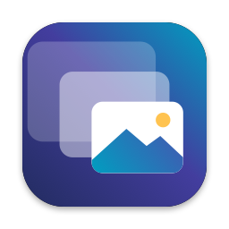
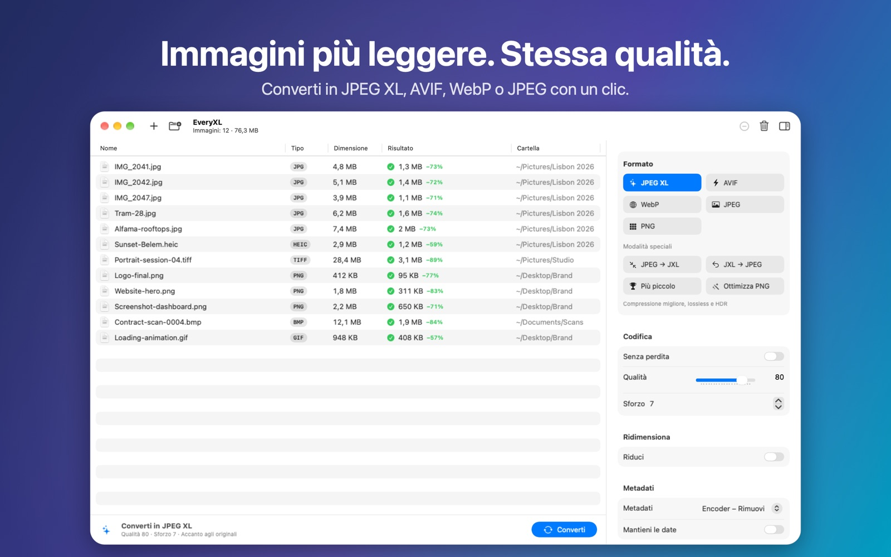

Immagini più leggere. Stessa qualità.
Riduci foto e grafiche con i formati moderni. Converti intere cartelle in JPEG XL, AVIF, WebP o JPEGLI in parallelo: veloce, privato e completamente offline.
Presto sul Mac App StoreRichiede macOS 14 o successivo · Apple silicon e Intel

Funzionalità
Formati moderni
JPEG XL, AVIF, WebP, JPEGLI e PNG: file più leggeri con la stessa qualità visiva.
JPEG → JXL senza perdita
JPEG più leggeri di circa il 20%, con l’originale ripristinabile bit per bit.
In serie e in parallelo
Trascina intere cartelle. EveryXL usa tutti i core del tuo Mac.
Dimensioni e metadati
Sei modalità di ridimensionamento, controllo EXIF/XMP/GPS e date preservate.
Privato
Tutto avviene sul tuo Mac. Nessun account, caricamento o tracciamento.
Nativo
Realizzato per macOS in SwiftUI, in sei lingue.